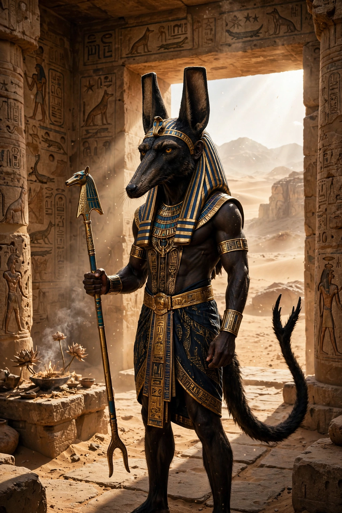

From Wikipedia, the free encyclopedia
| Set | |
|---|---|
| Affiliation | Egyptian mythology; god of deserts, storms, disorder and violence |
| Parents | Geb and Nut |
| Siblings | Osiris, Isis, Nephthys |
| Spouse | Nephthys |
| Symbol | The Set animal; was-sceptre |
| Role | Murderer of Osiris; defender of Ra's barque against Apep |

Set (also Seth, Sutekh) is a god of ancient Egyptian mythology associated with the desert, storms, disorder, violence and foreigners. Brother of Osiris, Isis and Nephthys — his wife — in the Heliopolitan Ennead, Set is famous as the murderer of Osiris and the great rival of Osiris's son Horus, yet he also plays an honoured role as the defender of Ra's solar barque against the serpent of chaos. His dual reputation made him one of the most complex figures of the Egyptian pantheon.
Set is depicted as a man with the head of an unidentified creature — the "Set animal" or sha — with a long, downcurved snout, tall squared ears and a stiff forked tail; no single real animal matches it, and zoological identifications (aardvark, donkey, fennec, okapi) remain conjectural. In full animal form he may appear as a similar beast, or as a donkey or pig in hostile contexts. He carries the was-sceptre, symbol of power, and the ankh.
Jealous of his brother Osiris, Set (in the fullest surviving account, Plutarch's) tricked him into lying in a decorated coffin, sealed it, and threw it into the Nile; later he tore Osiris's recovered body into pieces and scattered them through Egypt. Isis reassembled her husband and conceived Horus, who grew up to challenge Set for the throne. The New Kingdom tale The Contendings of Horus and Set recounts an eighty-year legal and physical struggle before the divine tribunal — a contest by turns violent, comic and obscene — ending with Horus confirmed as king and Set compensated with a place in the sky as god of storms, or, in other versions, set to defend Ra's barque, where his strength against Apep made him indispensable.
Set was patron of the Hyksos rulers and of the Ramesside pharaohs (the name Seti means "man of Set"), and his great centre was Ombos (Naqada). In later periods, as Osirian religion grew dominant and Egypt suffered foreign invasions associated with Set's desert realm, he was increasingly demonised — his images defaced and his name attacked — an unusual fall for a major Egyptian god.
Egyptian mythology · Anubis · Ra · Osiris · Horus